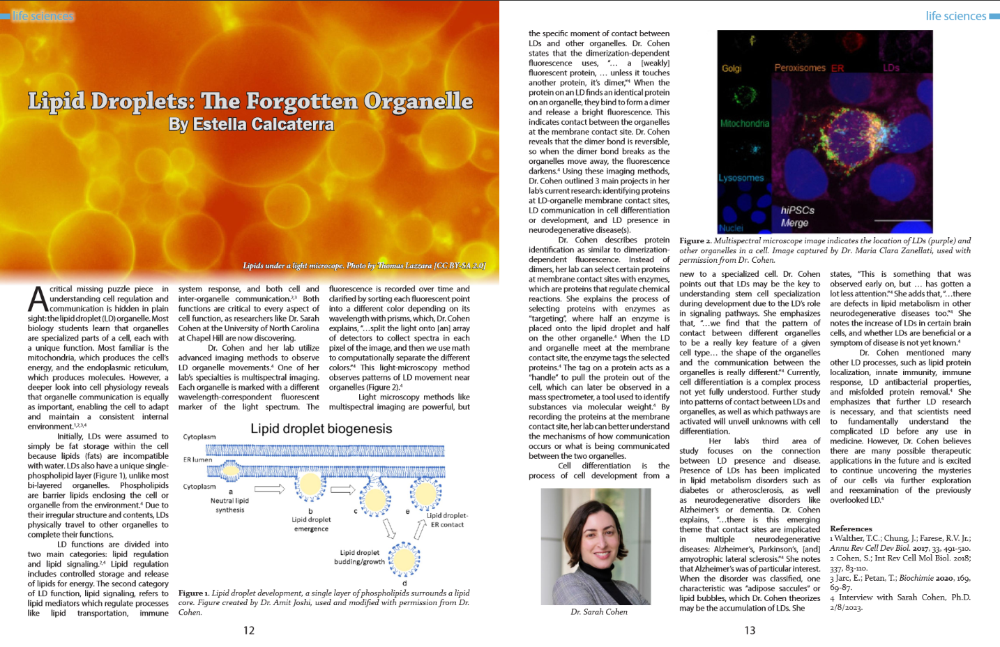
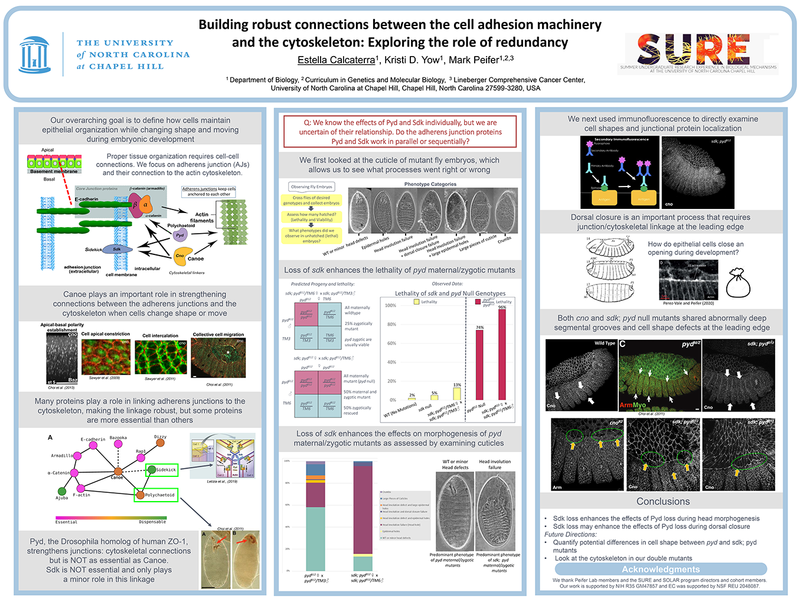

Publications
Carolina Scientific 2023

Carolina Scientific Spring 2023
Major discoveries in cell biology!
Calcaterra, E. (2023, May). Lipid Droplets: The Forgotten Organelle. Carolina Scientific. www.carolinascientific.org/new-page.
For Carolina Scientific's Spring 2023 edition, I interviewed Dr. Sarah Cohen at UNC-CH regarding her research on lipid droplet organelles. Prior to the interview, I conducted extensive research on the scientific literature surrounding the topic. I have also been an active member of the design team since Spring 2023.
View Article
Acknowledgements: Thank you to Dr. Sarah Cohen for allowing me to interview her and include her lab's research in my article.
SURE 2022

Research Symposium Poster
Developmental biology and genetics research internship.
Calcaterra, E., Yow, K.D., Peifer, M. Building robust connections between the cell adhesion machinery and the cytoskeleton:
Exploring the role of redundancy. Poster presented at: UNC-CH End of Summer Undergraduate Symposium; July 26, 2022; Chapel Hill, NC.
Under the SURE-REU 2022 program, I worked with Dr. Mark Peifer's lab conducting experiments and collecting data. At the conclusion of the program, I presented a poster at a symposium summarizing my work.
Visit the Lab
Acknowledgements: Thank you to Dr. Mark Peifer for his support and guidance throughout the SURE-REU, and Kristi D. Yow for her lab mentorship and patience. I also want to thank the Peifer lab, SURE-REU directors, and my fellow cohort members.